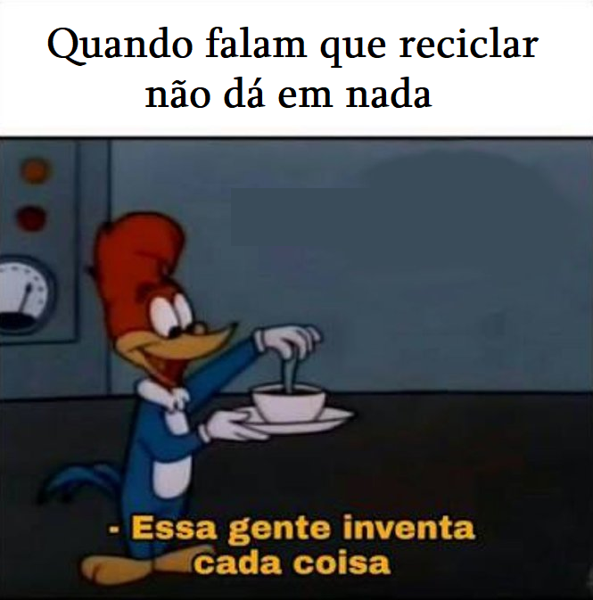

Somos alunos da escola Juscelino Kubitschek, fazendo o curso de informática do Instituto João Carlos Paes Mendonça. Decidimos nos unir para combater o desperdício de materiais recicláveis e incentivar a coleta seletiva no nosso ambiente de convívio. Queremos transformar essa tarefa em algo agradável de se fazer, transformando a reciclagem em diversão com a "memetologia" (termo inventado por nós). Obrigado por apoiar o Reciclaju.